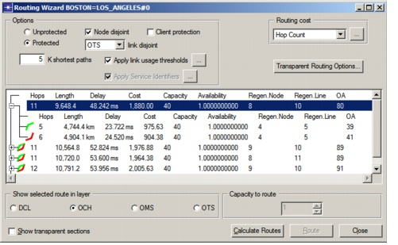

Routing > Manual Routing
Manual Routing
In addition to routing an entire traffic matrix, you can also establish and tear down individual connections using the Connection Browser. To route an unrouted connection, do Procedure 6-4. To tear down a routed connection, right-click on the connection in the Connection Browser and choose Tear Down.
Procedure 6-4 Routing an Individual Connection
- Right-click on an unrouted connection in the Connection Browser and select Route. (For more information, see Connection Browser.)
The Routing Wizard opens.
Figure 6-10 Routing Wizard

- Set up the Options, as well as the Routing Cost to use for calculating the routes, and click Calculate Routes.
The treeview shows all candidate routes for the connection and information about each route. For a protected connection, the tree shows information for both the working and protection path and for both paths together. For more information, see Table 6-7-Routing Wizard .
To view a route in the Project Editor, click on the route in the treeview.
- To establish a connection in the network, select the desired route, fill in the "Capacity to Route" field, and click Route.
End of Procedure 6-4
| Home © 1987-2007 OPNET Technologies, Inc. All Rights Reserved. This software may be covered by one or more U.S. Patents. See complete patent notice in the Legal Notices section. OPNET Support Center |